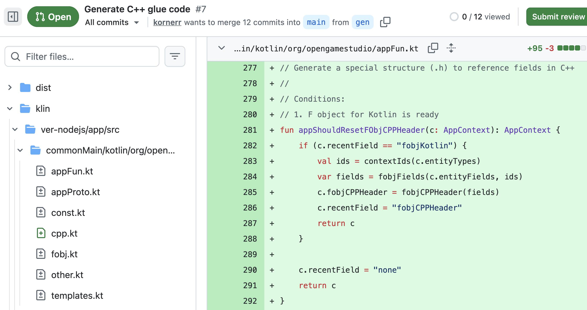
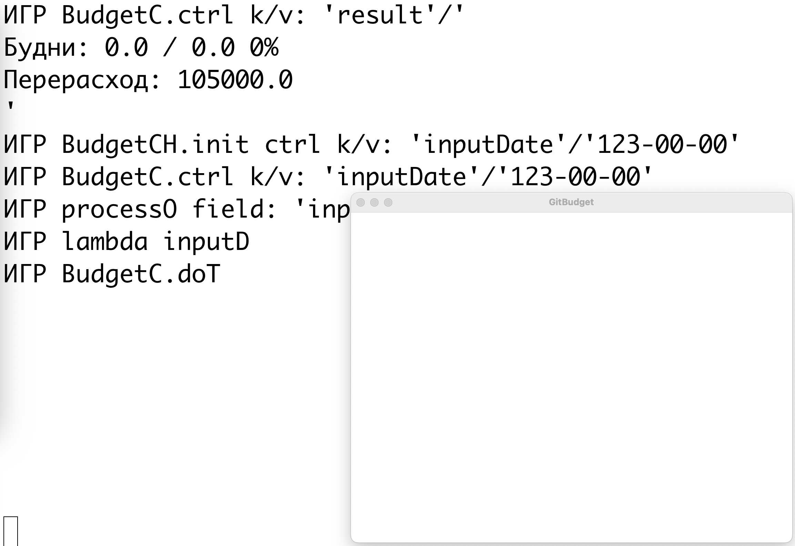
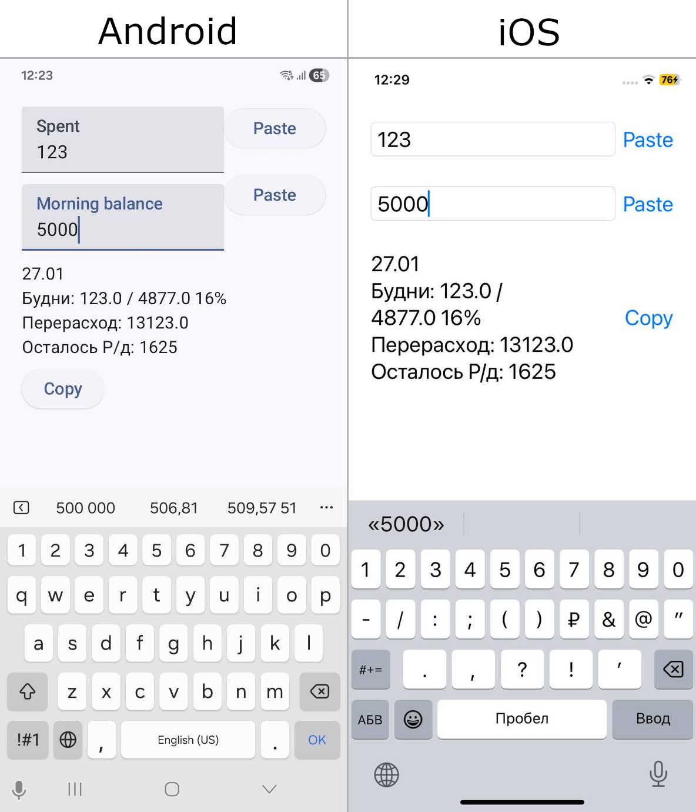
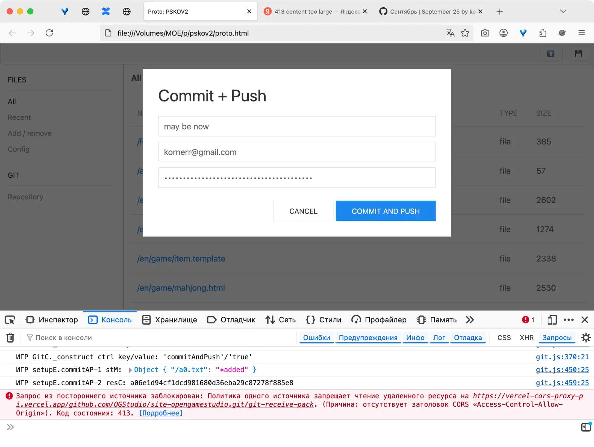

2026-05-01
В апреле я наконец доработал инструмент Klin для генерации кода обвязки на C++, после чего с помощью Kotlin Dialect удалось получить Git Budget на Qt для macOS.
Отдельного внимания заслуживает экономия строк кода при поддержке нескольких платформ:
| Платформа | Экономия в строках кода | Экономия в % | Общее количество строк кода |
|---|---|---|---|
| Android | 0 (Первичный код) | 0% | 652 |
2026-04-03

В марте (как и в феврале) планировал запустить GitBudget на Desktop, но обновление инструмента Klin для генерации кода обвязки для C++ всё ещё в работе. Осталось чуть-чуть.
В апреле это уже должно наконец свершиться.
. . .
2026-03-04

В феврале планировал запустить GitBudget на Desktop с помощью Qt, но глубина кроличьей норы Kotlin Multiplatform + C++ превзошла мои ожидания. В итоге, за февраль мне удалось лишь проверить техническую осуществимость задуманного, и преобразовать проект Cross-language dialect в Kotlin dialect, чтобы сосредоточиться на Kotlin.
В марте продолжу работу над проектом Kotlin dialect до состояния, когда удастся запустить GitBudget на Desktop с помощью Qt.
. . .
2026-02-01

В январе воскресил проект GitBudget по двум причинам:
В далёком 2020-м году при первой попытке сделать GitBudget мой акцент был на ведении истории трат, не аналитике. Сейчас же я в первую очередь сделал подсчёт баланса на текущий день по своей модели бюджета, т.е.. . .
2026-01-01
В декабре переработал управление файлами: теперь это аккордеон с таблицей вместо прежних карточек. Также сделал предпросмотр редактируемой страницы в отдельной вкладке браузера.
В видео показал это и акцентировал внимание на следующих моментах:
npx2025-12-04
В ноябре сделал предпросмотр текущей редактируемой страницы.
В видео показал, как это работает, и акцентировал внимание на следующих моментах:
npx2025-11-01
ПСКОВ теперь доступен в npm. Удобнее всего запускать через npx:
npx pskov --projectDir=/path/to/project
где /path/to/project надо заменить на путь до проекта
Files, Edit, RenderУ ПСКОВа теперь есть вкладки для разграничения выбора файла, его редактирования и просмотра результата конвертации Markdown (просмотр ещё не реализован). . .
2025-10-02
В сентябре сделал заготовку ПСКОВ 2 из двух частей: веб-клиент + веб-сервер:
Логику написал на Kotlin. Из Kotlin получаю для Node.js и браузера код на JavaScript. Работа с Kotlin в качестве якорного языка. . .
2025-09-03

В Августе я добавил команды git commit и git push к ПСКОВу.
Однако, выяснилось, что Vercel (на этом сервисе мы держим CORS proxy)
не пропускает запросы git push для довольного скромного по размерам
репозитория (50M) этого самого сайта. Vercel выдаёт ошибку 413 Content
too large.
Таким образом, поддержка git push для репозиториев нормального размера
требует от меня настройки и поддержки собственного сервера. На это
у меня сейчас нет ни средств, ни времени, к сожалению.. . .
Страница 1 из 10